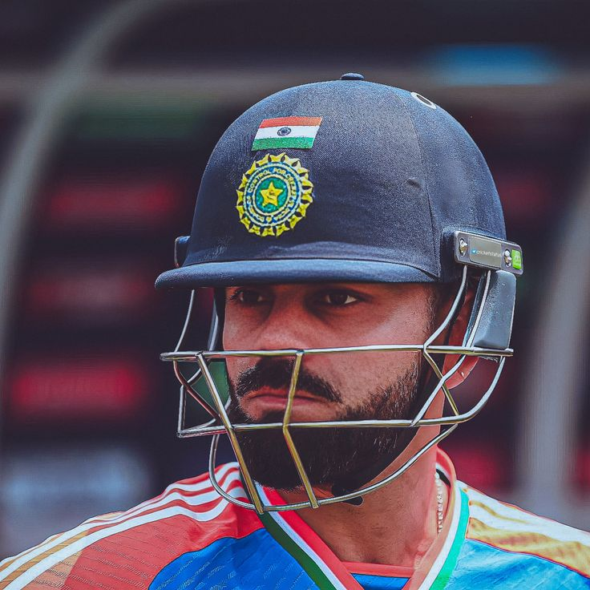
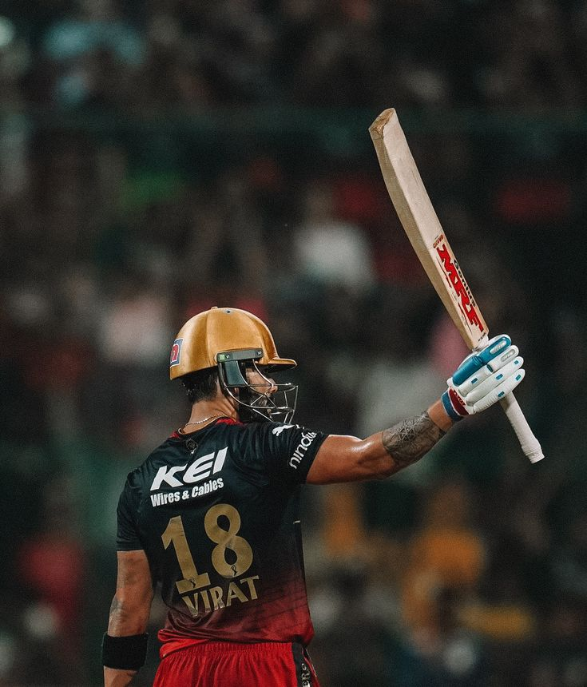

The Greatest of All Time!!
Regarded as one of the greatest batsmen in the history of cricket,
has left an indelible mark on the sport with his remarkable talent,
leadership, and dedication. Born on November 5, 1988, in Delhi,
India, Kohli's journey from a young cricket enthusiast to an
international icon is nothing short of inspirational.
Fastest to 8,000, 9,000, 10,000, and 11,000 ODI Runs: Kohli holds the record for being the fastest to reach these milestones in One Day Internationals, showcasing his incredible consistency and ability to score runs at an unparalleled pace. read more.
Most Centuries in ODIs: Kohli has surpassed several records for the most centuries scored in One Day Internationals, demonstrating his proficiency and dominance in the format over the years. Read more.
First Indian Captain to Win a Test Series in Australia: Under Kohli's leadership, India achieved a historic Test series win in Australia during the 2018-2019 series, a significant milestone in Indian cricket history. Read more.
Most Runs in a Single IPL Season: Kohli set a record for the most runs scored in a single Indian Premier League (IPL) season, amassing 973 runs in the 2016 season, highlighting his exceptional batting prowess in the T20 format. Read more.
